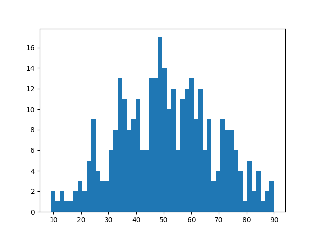
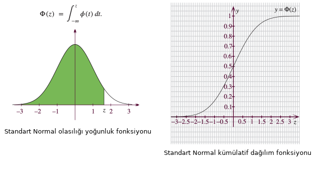

Olasılık, Dağılımlar, Giriş
Dağılımlar
Doğada yapılan çoğu ölçümlerin sıklık / frekans grafiğini alınca sonucun aşağıda gibi çıkması ilginçtir.

Mesela herhangi bir şehirde, ilçede 2000 yetişkinin kilosunu ölçün. Grafiğini alın kesinlikle yukarıdaki tepe şekli çıkacak. Ya da, 1000 kişinin boyunu ölçün, aynı tepe şekli. Keskin nişancının hedefe attığı kurşunların hedefe yakınlığını ölçüp sıklık grafiğine bakın. Gene aynı tepe şekli! Nasıl oluyor bu iş? Açıklama için, normal dağılım eğrisinden bahsetmemiz gerekecek. Not: Frekans grafiği, X sayısının ne kadar çıktığını sayıp, Y ekseni üzerinde bu sayıyı X'e tekabül ederek kolon olarak göstermeye denir. Mesela, 60 kilo değeri 13 kere çıktı ise, X=60, Y=13 gibi bir kolon çizilecektir.
Normal Dağılım Eğrisi
Normal dağılımın olasılık kavramı ile yakın bağları var. Bu konuda ünlü bir deney zar atma deneyidir. Elimizde tek bir zar var, ve bu zarı arka arkaya atalım. Sabrımız yeterse 1000 kere atalım. Sonuçta, frekans grafiği eşit bir dağılımda olacaktır.
Bunun sebeplerini anlamak zor değil. Her zar atış olayı birbirinden bağımsız, ve her sayının üstte gelme ihtimali birbirine eşit olduğu için (1/6), her sayıdan eşit miktarda gelecek. Tabii bu durumu görmek için deneyin birçok kere tekrarlanması gerekiyor.
Şimdi deneyi biraz değiştirelim, bir yerine 2 zar atalım. Hatta 4 zar atalım, ve bu sefer sıklık grafik hanesine yazmadan çıkan sayıları önce toplayalım. Bu çıkan toplamın sıklık grafiğini alalım.
İşte bu sıklık grafiği göreceğiz ki, üstte görülen tepe grafiğine yaklaşıyor. Ne kadar çok zar atarsak, bu benzerlik o kadar daha fazla olacaktır.
Sebep kabaca tahmin edilebilir, 1 ile 6 arası sayıların tek bir zardan gelme olasılığı aynı, evet. Fakat toplamlara gelince, mesela iki zarlı örnekte, 10 sayısının olasılığı 2 sayısından daha yüksek. Çünkü, 10 sayısını 5-5, 4-6 ya da 6-4 ile alabiliyoruz. 2 sayısı sadece 1-1 ile geliyor.
Buradan şu sonuç çıkabilir: Eğer doğada ölçtüğümüz bir kavramın oluşmasında birden fazla etken var ise, o ölçümlerin sıklığı her zaman çan (bell shape) şeklinde olacaktır. Bir kişinin boyunu, kilosunu etkileyen pek çok diğer faktör olduğu için bu ölçütlerin dağılımlarının normal çıktığı iddia edilebilir. Üstteki örnekteki toplamların dağılımının çan eğrisine yaklaşması durumu istatistikte Merkezi Limit Teorisi ile ispatlanmıştır.
Bu durumu hesap yapıp kendimiz de görebiliriz. İlk önce, random.org sitesinden rasgele sayı üreteceğiz. Bu site kimsenin kullanmadığı radyo kanallarından atmosfer gürültüsü dinleyip, bu gürültüleri sayısal değere çevirerek rasgele sayı üretiyor. Gerçek rasgele sayı üretmek pek kolay bir iş değil. Her ne kadar bilgisayarımızda rasgele sayı üreten birçok algoritma olsa bile, bu algoritmalar belli bir sayı üretiminden sonra kendini tekrar etmeye başlıyorlar, bu sebeple onlara yarı-rasgele (pseudorandom) sayılar ismi veriliyor. Gerçek rasgele sayılar için dış bir kaynağa bağlanmak bir seçenek olabilir. Ama şunu da söylemek lazım, simulasyon tekniklerinin tamamı için yarı-rasgele sayılar yeterlidir.
Neyse bahsedilen siteden rasgele sayıları üretip, bir veri dosyasına koyuyoruz, kod ile bu sayıları okuyup, ilk önce teker teker sayıların sıklık grafiğini, ondan sonra sayıları üçer üçer toplayıp, onların grafiğini alıp göstereceğiz.
A = np.loadtxt('rasgele.dat')
plt.hist(A, 50)
plt.savefig('stat_intro_08.png')

A = np.loadtxt('rasgele.dat');
B = []
i = 1;
while (i < 998):
toplam = 0
s = A[i]
toplam = toplam + s
s = A[i+1]
toplam = toplam + s
s = A[i+2]
toplam = toplam + s
B.append(toplam/3)
i = i + 3
plt.hist(B, 50);
plt.savefig('stat_intro_09.png')

Dağılım normal dağılıma benziyor.
Giriş konularını teker teker işlemeden önce derinleme bir dalış yapıp tüm kavramlara değinelim. İstatistiğin temel öğelerinden biri yoğunluk fonksiyonudur (probability density function), mesela
$$ f(x)=N \cdot e^{-\frac{(x-\mu)^2}{2\sigma^2}} $$
ki $N$ normalize edici bir faktör, $\frac{1}{\sqrt{2\pi\sigma^2}}$, $\sigma$, $\mu$ dışarıdan bizim tanımladığımız parametreler. $N$ kısmı çarpılan bölümün biri bölen entegrali aslında, ki böylece tüm yoğunluğun entegrali (yani tüm olasılık) 1 olabilsin. Bu şekilde pek çok fonksiyon olasılık yoğunluğu haline getirebilir.
Farklı yoğunluk fonksiyonları var, hangisinin hangi tür veriye uyacağını bulmak istatistikçinin önemli işlerinden. Yoğunluk çok boyutlu da olabilir.
Tek boyutlu bir yoğunluk fonksiyonun x-ekseni üzerindeki alanı her zaman 1'e eşit olmalıdır (yani yoğunluğun $-\infty,\infty$ üzerinden entegrali her zaman 1 sonucunu vermeli). Olasılık teorisinin işlemesi için bu gerekli.
Yoğunluk fonksiyonları doğadan gelen bir tek ölçümü alırlar, boy, kilo gibi, ve onun 'olasılık yoğunluğunu' hesaplarlar. Üstteki örnek için mesela 3 ve 1 değerlerinin yoğunluğunu hesaplayalım,
mu = 0
sigma = 1
def f(x): return (1 / (np.sqrt(2 * np.pi * np.power(sigma, 2)))) * \
(np.power(np.e, -(np.power((x - mu), 2) / (2 * np.power(sigma, 2)))))
print ('3 icin', f(3))
print ('1 icin', f(1))
3 icin 0.004431848411938008
1 icin 0.24197072451914337
1 değeri 3'ten daha düşük -- çünkü bu 0 merkezli bir yoğunluk fonksiyonu, sıfıra ne kadar yakınsa yoğunluk o kadar fazla. Bu fonksiyonun tasarlanış şekli böyle. Eğer tüm olası değerleri $x$'e verip grafiklesek,
x = np.array(np.linspace(-3,3,num=50))
y = f(x)
plt.plot(x,y)
plt.savefig('stat_intro_03.png')
Dikkat: yoğunluk fonksiyonu olasılık değildir; bazı yoğunluk değerleri bazı sürekli fonksiyonlarda 1'den fazla çıkabilir! Sürekli ortamda olasılık bir entegraldir, daha önce söylediğimiz gibi tüm fonksiyon alanı 1. Altta bir normal dağılım yoğunluk fonksiyonu solda, onun entegrali kümülatif dağılım fonksiyonu (CDF) sağda.

CDF bize mesela üstteki grafikte değerin 0 ila 1.5 arasında olma olasılığını veriyor.
CDF hesabı için istatistik yazılım paketlerinde muhakkak bir çağrı olur, mesela
scipy.stats ile,
import scipy.stats
print (scipy.stats.norm.cdf(1.5,0,1))
0.9331927987311419
1'ye yakın oldukca büyük bir sayı, grafiğe uygun. CDF her zaman 0'dan sorulan değere kadar olan alanı verir, tüm alanın 1 olması bilgisinden hareketle bu öğeler biraraya koyulup ek sonuçlara varılabilir, mesela değerin 1.5'tan büyük olma olasılığı için 1-CDF(1.5). Eğer -2 ile 2 arası olma olasılığını istiyorsak CDF(2)-CDF(-2).
Veriden Fonksiyon
Şimdi mesela elimizde bir grup kişinin 68 kiloya ne kadar yakın / uzak olduğunun verisi var (68'ten az olanlar eksi değerli olacak tabii). Veriyi grafikleyelim,
import pandas as pd
df = pd.read_csv('boy68.csv')
df.hist()
plt.savefig('stat_intro_04.png')
plt.hold(False)
Dikkat veriyi grafiklemek için histogram kullandık, yani verinin "frekansını" bastık, bu tür grafiklere göre mesela eğer 3 değeri 10 kere geldi, 1 değeri 2 kere geldi ise 3'un üzerindeki sütun diğerinden daha yüksek olacaktır, çünkü onun "frekansı" daha fazla.
Bir histogramın aslında yoğunluk fonksiyonunun verisel / ayrıksal hali olduğu da düşünülebilir.
Şimdi biz analizci olarak bu grafiğe bakarız, ve deriz ki acaba biraz önceki $f(x)$ yoğunluğu bu veriye "uyar mı"? Uyar ise ne güzel, $f(x)$ bir sürekli fonksiyon, derli toplu, onun üzerinde pek çok işlem yapabiliriz, bu veriyle işlem yaparken o fonksiyonu kullanmak bize bazı avantajlar sağlayabilir. Eğer temsil edemez ise hangi başka yoğunluk edebilir? Vs.. İstatistik notlarımızda tüm bunların cevabını bulacağız. Bazen yoğunlukların sabitleri olacak (mesela merkez 0 yerine başka bir yerde olsun diyebilmek), ve bu sabitleri, hiperparametreleri veriden hesaplamanın yolları var.. Veriden teoriksel yoğunluğa, oradan başka teorilere, oradan tekrar veriye atlayabilmek istatistiğin özü.
Diyelim ki bir şekilde verinin Normal olduğuna karar verdik (bunun testleri, metotu var tabii) o zaman veriye uygun $\mu,\sigma$ parametrelerini nasıl bulacağız? Veriyi kullanıp bir hesap yaparak! Tahmin ediciler burada devreye giriyor, mesela Normal dağılım için $\mu$ tahmin edici / kestirme hesaplayıcısı $\hat{\mu} = \sum x_i / n$, yani verinin ortalaması [5]!
Ayrıksal Dağılımlar
Normal dağılım, üstel dağılım birer sürekli fonksiyondurlar, tek boyutta $x$ bir reel sayıdır. Fakat ayrıksal olan dağılımlar da var, mesela Poisson,
$$ f(x) = e^{-\lambda}\lambda^{x} / x! $$
ki dışarıdan tanımlı parametre $\lambda$. Burada geçilen $x$ tam sayı değerler, 1,2,3 gibi.. Ayrıksal olasılık kütle fonksiyonu (süreklideki olasılık yoğunluk yerine) sonuçları birer olasılık olarak kabul edilebilir, çünkü tam sayılar bir nevi kutucuk, geniş alan oluştururlar.
from scipy.special import factorial
def poisson_distribution(k, lam):
return (lam ** k * np.exp(-lam)) / factorial(k)
x = np.array(range(20))
y = poisson_distribution(x,lam=5)
plt.plot(x,y)
plt.savefig('stat_intro_12.png')

Poisson dağılımın sola doğru meyilli olabileceğini görüyoruz üstte, demek ki veride bu tür bir şekil görürsek onu temsil için Poisson seçebiliriz.
Rasgele Değişkenler
Rasgele değişkenler çoğunlukla büyük harfle gösterilirler, mesela $X$ ya da $Y$ gibi ve bir dağılıma / onun yoğunluk fonksiyonuna göbekten bağlantılıdırlar. Onları formül içinde görünce sanki her bakışınızda içlerinin başka bir rasgele sayı ile doldurulduğunu düşünebiliriz, ama tabii ki bu "rasgelelik" o RD'nin bağlı olduğu dağılıma göredir. Eğer $X$ üstteki $f(x)$ ile dağılmış dersek, o zaman sıfıra yakın daha çok, 5'e yakın daha az değerler üretilir.
RD'leri formül içinde bile kullanabilirsiniz, mesela
$$ 3X + \log X $$
diyebilirdim. Başka değişkenler $Y,Z$ vs formüle ekleyebilirdim. RD'lerin bu tür işlemleri sonucu başka tür RD'ler ortaya çıkabilir (yani sonuç RD'nin bağlı olduğu dağılım farklı bir dağılım olabilir), İstatistik ayrıca bu sonuç dağılımlarının ne olabileceği hakkında güzel dersler içerir.
Tekrarlamak gerekirse, $f(x)$'e verilen $x$ ile $X$'in değerleri birbirine karışmasın. İlki için bildiğimiz bir $x$'in olasılığını soruyoruz, mesela "3'ün olasılığı ne?" diğerinde bize $f(x)$'e göre bir sayı üret diyoruz, ve 0.3, 0.1, 0., 0.5 gibi değerler geliyor, kırk yılda bir de bir 3 geliyor belki.
Şimdi istatistiğin temelini oluşturan olasılık teorisinden bahsedelim.
Olasılık
Örneklem Uzayı (Sample Space)
Örneklem uzayı $\Omega$ bir deneyin mümkün tüm olasılıksal sonuçların (outcome) kümesidir. Eğer deneyimiz ardı ardına iki kere yazı (T) tura (H) atıp sonucu kaydetmek ise, bu deneyin mümkün tüm sonuçları şöyledir
$$\Omega = {HH,HT,TH,TT} $$
Sonuçlar ve Olaylar (Outcomes and Events)
$\Omega$ içindeki her nokta bir sonuçtur (outcome). Olaylar $\Omega$'nin herhangi bir alt kümesidir ve sonuçlardan oluşurlar. Mesela üstteki yazı-tura deneyinde "iki atışın içinden ilk atışın her zaman H gelmesi olayı" böyle bir alt kümedir, bu olaya $A$ diyelim, $A = {HH,HT}$.
Ya da bir deneyin sonucu $\omega$ fiziksel bir ölçüm , diyelin ki sıcaklık ölçümü. Sıcaklık $\pm$, reel bir sayı olduğuna göre, $\Omega = (-\infty, +\infty)$, ve sıcaklık ölçümünün 10'dan büyük ama 23'ten küçük ya da eşit olma "olayı" $A = (10,23]$. Köşeli parantez kullanıldı çünkü sınır değerini dahil ediyoruz.
Örnek
10 kere yazı-tura at. $A$ = "en az bir tura gelme" olayı olsun. $T_j$ ise $j$'inci yazı-tura atışında yazı gelme olayı olsun. $P(A)$ nedir?
Bunun hesabı için en kolayı, hiç tura gelmeme, yani tamamen yazı gelme olasılığını, $A^c$'yi hesaplamak, ve onu 1'den çıkartmaktır. $^c$ sembolü "tamamlayıcı (complement)" kelimesinden geliyor.
$$ P(A) = 1 - P(A^c) $$
$$ = 1 - P(\textit{hepsi yazı}) $$
$$ = 1-P(T_1)P(T_2)...P(T_{10}) $$
$$ = 1 - \bigg(\frac{1}{2}\bigg)^{10} \approx .999 $$
Rasgele Değişkenler (Random Variables)
Bir rasgele değişken $X$ bir eşlemedir, ki bu eşleme $X: \Omega \to \mathbb{R}$ her sonuç ile bir reel sayı arasındaki eşlemedir.
Kabaca anlatmak gerekirse rasgele değişken $X$'in, bağlı olduğu dağılımın zar atılmış değerini içerdiği, ve bu değerlerden bazılarını filtreyebildiği, düşünülebilir. Her rasgele değişken tek bir dağılıma bağlıdır, ve $X$'e ne zaman referens edersek onun içinin bu dağılımdan gelen bir sayı ile doldurulduğunu hayal etmek gerekir, tabii ki çoğu dağılımda bazı sayılar daha olasıdır, ve bu içi doldurmanın çoğunlukla bu olası sayılardan olacağı düşünülebilir.
Olasılık derslerinde bir noktadan sonra artık örnekleme uzayından bahsedilmez, ama bu kavramın arkalarda bir yerde her zaman devrede olduğunu hiç aklımızdan çıkartmayalım.
Örnek
10 kere yazı-tura attık diyelim. VE yine diyelim ki $X(\omega)$ rasgele değişkeni her $\omega$ sıralamasında (sequence) olan tura sayısı. Mesela eğer $\omega = HHTHHTHHTT$ ise $X(\omega) = 6$. Tura sayısı eşlemesi $\omega$ sonucunu 6 sayısına eşledi.
Örnek
Rasgele değişken $X$ iki zar atınının toplamı olabilir.
$$ P(X=2) = P(\textrm{iki tane 1 gelme şansı}) = 1/36 $$
$$ P(X=3) = P((1,2),(2,1)) = 2/36 $$
$$ \vdots $$
Örnek
$\Omega = { (x,y); x^2+y^2 \le 1 }$, yani küme birim çember ve içindeki reel sayılar (unit disc). Diyelim ki bu kümeden rasgele seçim yapıyoruz. Tipik bir sonuç $\omega = (x,y)$'dir. Tipik rasgele değişkenler ise $X(\omega) = x$, $Y(\omega) = y$, $Z(\omega) = x+y$ olabilir. Görüldüğü gibi bir sonuç ile reel sayı arasında eşleme var. $X$ rasgele değişkeni bir sonucu $x$'e eşlemiş, yani $(x,y)$ içinden sadece $x$'i çekip çıkartmış. Benzer şekilde $Y,Z$ değişkenleri var.
Toplamsal Dağılım Fonksiyonu (Cumulative Distribution Function -CDF-)
Tanım
$X$ rasgele değişkeninin CDF'i $F_X: \mathbb{R} \to [0,1]$ tanımı
$$ F_X(x) = P(X \ge x) $$
Eğer $X$ ayrıksal ise, yani sayılabilir bir küme ${x_1,x_2,...}$ içinden değerler alıyorsa olasılık fonksiyonu (probability function), ya da olasılık kütle fonksiyonu (probability mass function -PMF-)
$$ f_X(x) = P(X = x) $$
Bazen $f_X$, ve $F_X$ yerine sadece $f$ ve $F$ yazarız.
Tanım
Eğer $X$ sürekli (continuous) ise, yani tüm $x$'ler için $f_X(x) > 0$, $\int_{-\infty}^{+\infty}f(x) \mathrm{d} x = 1$ olacak şekilde bir $f_X$ mevcut ise, o zaman her $a \le b$ için
$$ P(a<X<b) = \int_{a}^{b}f_X(x) \mathrm{d} x $$
Bu durumda $f_X$ olasılık yoğunluk fonksiyonudur (probability density function -PDF-).
$$ F_X = \int_{\infty}^{x}f_X(t) \mathrm{d} t $$
Ayrıca $F_X(x)$'in türevi alınabildiği her $x$ noktasında $f_X(x) = F'_X(x)$ demektir.
Dikkat! Eğer $X$ sürekli ise o zaman $P(X = x) = 0$ değerindedir. $f(x)$ fonksiyonunu $P(X=x)$ olarak görmek hatalıdır. Bu sadece ayrıksal rasgele değişkenler için işler. Sürekli durumda olasılık hesabı için belli iki nokta arasında entegral hesabı yapmamız gereklidir. Ek olarak PDF 1'den büyük olabilir, ama PMF olamaz. PDF'in 1'den büyük olabilmesi entegrali bozmaz mı? Unutmayalım, entegral hesabı yapıyoruz, noktasal değerlerin 1 olması tüm 1'lerin toplandığı anlamına gelmez.
Olasılık yoğunluk fonksiyonundaki yoğunluk kelimesini tekrar vurgulamak iyi olur. Özellikle sürekli dağılım bağlamında bu kavramı hakiki yoğunluk gibi düşünmek iyi olur. Mesela tamamı aynı maddeden olan bir küp düşünelim, yoğunluğu 2. Bu küpün neresine bakarsak bakalım yoğunluk hep aynı olur, 2. Yoğunluk bir bakıma belli bir alanı temsil eden bir özet. Sonra bu küpün kütlesini bulmak için habire bir sürü 2'yi üst üste koyup toplamıyoruz; kütle hesabı için bir çarpım yapıyoruz / entegral alıyoruz.
Örnek olarak çan eğrisi / normal dağılımdan sayılar üretelim. Bu dağılımda "ağırlık" ortadadır. Rasgele sayı üretip histograma bakalım,
mu=10;sigma=0.1
data = np.random.normal(mu,sigma,100)
hst = plt.hist(data, normed=True,bins=6)
print hst[0]
[ 1.79234778 2.81654651 4.60889429 2.17642231 1.15222357 0.25604968]
Görüldüğü gibi 1'den büyük değerler var, ve "yoğunluk" ortadaki iki kutuda. Olasılık yoğunluk hesabını formülsel yapsak, mesela 10 noktasının ağırlığı nedir desek,
print norm.pdf(10,mu,sigma)
3.98942280401
Şimdi olasılık değerleri, $P(a < X < b)$ ifadesi, alan hesabı ve rasgele değişkenler arasındaki bağlantıyı biraz daha detaylandırmak gerekirse; $X$ bir rasgele değişken, nokta (kesin) değeri olmasa da denklemde kullanılabiliyor, toplanıp çıkartılabiliyor, vs. Bu değişkene "değeri sorulduğunda" bu değer o $X$'in bağlı olduğu dağılımın zar atması sonucunda gelecektir. Bu zar atışı ise olasılık fonksiyonunun yüksek değer verdiği $x$ değerlerini daha fazla üretecektir doğal olarak. Bunu kavramsal olarak söylüyoruz tabii, istatistiki problemlerde illa bu zar atışını yapmamız gerekmeyebilir.

Mesela üstteki dağılım için 100 ve çevresindeki değerlerinin olasılığı çok yüksek, mesela grafiğe bakarsak, kabaca, $f_X(100) = 0.027$, ya da $f_X(120) = 0.015$. Demek ki bu dağılıma bağlı bir $X$, o çevreden daha fazla değer üretir.
Rasgele değişkene bağlı olasılık hesabı için ise, mesela $P(X < 120)$ diyelim, bu ifade ile ne diyoruz? Sorduğumuz şudur, zar atışlarının belli değer altında gelmesi olasılığı... Bu hesap tabii ki bir alan hesabıdır, x eksenindeki belli aralıklar, bölgelerin toplam olasılığının ne olacağı o bölgenin tam üzerindeki yoğunluğun toplamı olacaktır, aynen tek değerlerin olasılığının o tek değerin yoğunluk değeri olması gibi. Yani bu tür olasılık hesapları direk $f_X(x)$ üzerinden yapılacaktır. Zar atıldığında 100'den küçük değerlerin gelme olasılığı nedir? Alana bakarsak 0.5, yani 1/2, tüm alanın yarısı. Bu normal, çünkü 100'den küçük değerler dağılımın yarısını temsil ediyor. 200'den küçük değerler gelme olasılığı nedir, yani $P(X < 200)$? Olasılık 1. $f_X$ alanının tamamı. Yani kesin. Çünkü yoğunluk fonksiyonunun tamamı zaten 200'den küçük değerler için tanımlı. "Yoğunluk orada".
Tanım
$X$ rasgele değişkeninin CDF'i $F$ olsun. Ters CDF (inverse cdf), ya da yüzdelik dilim fonksiyonu (quantile function)
$$ F^{-1}(q) = \inf \bigg\{ x: F(x) \le q \bigg\} $$
ki $q \in [0,1]$. Eğer $F$ kesinlikle artan ve sürekli bir fonksiyon ise $F^{-1}(q)$ tek bir $x$ sayısı ortaya çıkarır, ki $F(x) = q$.
Eğer $\inf$ kavramını bilmiyorsak şimdilik onu minimum olarak düşünebiliriz.
$F^{-1}(1/4)$ birinci çeyrek
$F^{-1}(1/2)$ medyan (median, ya da ikinci çeyrek),
$F^{-1}(3/4)$ üçüncü çeyrek
olarak bilinir.
İki rasgele değişken $X$ ve $Y$ dağılımsal olarak birbirine eşitliği, yani $X \ \buildrel d \over = \ Y$ eğer $F_X(x) = F_Y(x)$, $\forall x$. Bu $X,Y$ birbirine eşit, birbirinin aynısı demek değildir. Bu değişkenler hakkındaki tüm olasılıksal işlemler, sonuçlar aynı olacak demektir.
Uyarı! "$X$'in dağılımı $F$'tır" beyanını $X \sim F$ şeklinde yazmak bir gelenek. Bu biraz kötü bir gelenek aslında çünkü $\sim$ sembolü aynı zamanda yaklaşıksallık kavramını belirtmek için de kullanılıyor.
Tanım
$x_1,..,x_n$ verilerini içeren örneklemin (sample) ortalaması
$$ \bar{x} = \frac{1}{n} \sum x_i \qquad (1) $$
Dikkat bu örneklemdeki verinin ortalaması. Hiçbir dağılım hakkında hiçbir faraziye yapmadık. Ayrıca tanım kullandık, yani bu ifadenin ne olduğu tamamen bize bağlı.
Örneklem ortalaması sadece tek merkezi bir tepesi olan (unimodal) dağılımlar için geçerlidir. Eğer bu temel varsayım geçerli değilse, ortalama kullanarak yapılan hesaplar bizi yanlış yollara götürür. Ayrıca bir dağılımı simetrik olup olmadığı da ortalama ya da medyan kullanılıp kullanılmaması kararında önemlidir. Eğer simetrik, tek tepeli bir dağılım var ise, ortalama ve medyan birbirine yakın olacaktır. Fakat veri başka türde bir dağılım ise, o zaman bu iki ölçüt birbirinden çok farklı olabilir.
Dağılımlar
Bernoulli Dağılımı
$X$'in bir yazı-tura atışını temsil ettiğini düşünelim. O zaman $P(X = 1) =p$, ve $P(X = 0) = 1 - p$ olacaktır, ki $p \in [0,1]$ olmak üzere. O zaman $X$'in dağılımı Bernoulli deriz, $X \sim Bernoulli(p)$ diye gösteririz. Olasılık fonksiyonu, $x \in {0,1}$.
$$ f(x;p) = p^x(1-p)^{(1-x)} $$
Yani $x$ ya 0, ya da 1. Parametre $p$, 0 ile 1 arasındaki herhangi bir reel sayı.
$$ E(X) = p $$
$$ Var(X) = p(1-p) $$
Uyarı!
$X$ bir rasgele değişken; $x$ bu değişkenin alabileceği spesifik bir değer; $p$ değeri ise bir parametre, yani sabit, önceden belirlenmiş reel sayı. Tabii istatistiki problemlerde (olasılık problemlerinin tersi olarak düşünürsek) çoğunlukla o sabit parametre bilinmez, onun veriden hesaplanması, kestirilmesi gerekir. Her halükarda, çoğu istatistiki modelde rasgele değişkenler vardır, ve onlardan ayrı olarak parametreler vardır. Bu iki kavramı birbiriyle karıştırmayalım.
Binom Dağılımı (Binomial Distribution)
Her biri birbirinden bağımsız ve birbiriyle aynı Bernoulli Dağılımına sahip deneylerden $n$ tane yapıldığını farzedelim, ki bu deneylerin sadece iki sonucu olacak (1/0. başarı/başarısızlık, vs). Bu deneylerin $p$'sı aynı olacak. O zaman $n$ deney içinden toplam kaç tanesinin başarılı olduğunu gösteren $X$ rasgele değişkeni Binom Dağılımına sahiptir denir.
Bu dağılımın yoğunluğu
$$ f(x;p,n) = {n \choose{x}} p^x(1-p)^{n-x} $$
$$ = \frac{n!}{x!(n-x)!} p^x(1-p)^{n-x} $$
Bu fonksiyonun parametreleri $p,n$ değerleridir. Beklenti ve varyans
$$ \mu = E(X) = np $$
$$ \sigma^2 = Var(X) = np(1-p) $$
Birörnek (Uniform) Dağılım
$X$ birörnek, $Uniform(a,b)$ olarak dağılmış deriz, ve bu $X \sim Uniform(a,b)$ olarak yazılır eğer
$$ f(x) = \left\{ \begin{array}{ll} \frac{ 1}{b-a} & x \in [a,b] \ icin \\ 0 & diger \end{array} \right. $$
işe ve $a<b$ olacak şekilde. CDF hesabı olasılık eğrisinin entegralini temel alır, düz dağılım bir $a,b$ arasında $1/b-a$ yüksekliğinde bir dikdörtgen şeklinde olacağı için, bu dikdörtgendeki herhangi bir $x$ noktasında CDF dağılımı, yani o $x$'in başlayıp sol tarafın alanının hesabı basit bir dikdörtgensel alan hesabıdır, yani $x-a$ ile $1/b-a$'nin çarpımıdır, o zaman
$$ F(x) = \left\{ \begin{array}{ll} 0 & x < a \\ \frac{ x-a}{b-a} & x \in [a,b] \\ 1 & x > b \end{array} \right. $$
Beklenti $E[X] = 1$.
Multinom (Multinomial) Dağılım
Çok boyutlu $X$ rasgele değişkeni, ki boyutu $k$ olarak tanımlayalım, $X \sim Mult(m,p)$ olarak dağılmıştır deriz, eğer bu dağılım $k$ sınıf, kategori içinden birinin seçildiği durumda $m$ deney içinden kaç tanesinin hangi kategorilerde olduğunu temsil ediyorsa, ve $p$ çok boyutludur. Multinom, binom dağılımının çok kategorili halidir denebilir, ya da binom, multinomun $k=2$ halidir. Olasılıklar,
$$ P(X_1=m_1,...,X_k=m_k) = f(x;m,p) $$
ki $m_k$, $k$'inci kategoriden kaç tane görüldüğü. Olasılık yoğunluk fonksiyonu,
$$ f(x;m,p) = \frac{m!}{x_1! \cdot \cdot !x_k!} p_{1}^{x_1} \cdot \cdot p_{1}^{x_k} $$
Beklenti $ E(X) = p $. Her kategori, hücre $i$ için tabii ki $ E(X_i) = p$, varyans ise $Var(X_i) = m p_i(1-p_i)$. Kovaryans $Covar(X_i,X_j) = -mp_ip_j$. Bunun türetilmesini ilerideki bir bölümde göreceğiz.

Poisson Dağılımı
Sayım verilerini (count data) modellemek için bu dağılım çok kullanılır. Tanımı,
$$ f(x) = P(X=x) = e^{-\lambda}\frac{\lambda^{x}}{x!} $$
Poisson dağılımını tanımlayan $\lambda$ sabitidir. Belli bir Poisson yoğunluk fonksiyonu göstermek için $f(x;\lambda)$ gibi bir tanım görebilirsiniz. Bu dağılımın önemli bir özelliği ortalama ve varyansının aynı olmasıdır.
Normal (Gaussian) Dağılım
$X \sim N(\mu, \sigma^2)$ ve PDF
$$ f(x) = \frac{1}{\sigma\sqrt{2\pi}} \exp \bigg\{ - \frac{1}{2\sigma^2}(x-\mu)^2 \bigg\} , \ x \in \mathbb{R} $$
ki $\mu \in \mathbb{R}$ ve $\sigma > 0$ olacak şekilde. Bazıları bu dağılımı
$$
= \frac{1}{\sigma\sqrt{2\pi}}
\exp \bigg\{ -\frac{1}{2}(x-\mu)\sigma^{-2}(x-\mu) \bigg\}
$$
olarak gösterebiliyor, çünkü bu şekilde (birazdan göreceğimiz) çok boyutlu Gaussian formülü ile alaka daha rahat gözüküyor.
İleride göreceğiz ki $\mu$ bu dağılımın "ortası", ve $\sigma$ onun etrafa ne kadar "yayıldığı" (spread). Normal dağılım olasılık ve istatistikte çok önemli bir rol oynar. Doğadaki pek çok olay yaklaşıksal olarak Normal dağılıma sahiptir. Sonra göreceğimiz üzere, mesela bir rasgele değişkenin değerlerinin toplamı her zaman Normal dağılıma yaklaşır (Merkezi Limit Teorisi -Central Limit Theorem-).
Eğer $\mu = 0$ ve $\sigma = 1$ ise $X$'in standart Normal dağılım olduğunu söyleriz. Geleneğe göre standart Normal dağılım rasgele değişkeni $Z$ ile gösterilmelidir, PDF ve CDF $\phi(z)$ ve $\Phi(z)$ olarak gösterilir.
$\Phi(z)$'nin kapalı form (closed-form) tanımı yoktur. Bu, matematikte "analitik bir forma sahip değil" demektir, formülü bulunamamaktadır, bunun sebebi ise Normal PDF'in entegralinin analitik olarak alınamıyor oluşudur.
Bazı faydalı püf noktaları
-
Eğer $X \sim N(\mu, \sigma^2)$ ise, o zaman $Z = (X-\mu) / \sigma \sim N(0,1)$.
-
Eğer $Z \sim N(0,1)$ ise, o zaman $X = \mu + \sigma Z \sim N(\mu,\sigma^2)$
-
Eğer $X_i \sim N(\mu_i, \sigma_i^2)$, $i=1,2,...$ ve her $X_i$ diğerlerinden bağımsız ise, o zaman
$$ \sum_{i=1}^n X_i = N\bigg( \sum_{i=1}^n\mu_i, \sum_{i=1}^n\sigma^2 \bigg) $$
Tekrar $X \sim N(\mu, \sigma^2)$ alırsak ve 1. kuraldan devam edersek / temel alırsak şu da doğru olacaktır.
$$ P(a < X < b) = ? $$
$$ = P\bigg( \frac{a-\mu}{\sigma} < \frac{X-\mu}{\sigma} < \frac{b-\mu}{\sigma} \bigg) $$
$$ = P\bigg(\frac{a-\mu}{\sigma} < Z < \frac{b-\mu}{\sigma}\bigg) = \Phi\bigg(\frac{b-\mu}{\sigma}\bigg) - \Phi\bigg(\frac{a-\mu}{\sigma}\bigg) $$
İlk geçişi nasıl elde ettik? Bir olasılık ifadesi $P(\cdot)$ içinde eşitliğin iki tarafına aynı anda aynı toplama, çıkarma operasyonlarını yapabiliriz.
Son ifadenin anlamı şudur. Eğer standart Normal'ın CDF'ini hesaplayabiliyorsak, istediğimiz Normal olasılık hesabını yapabiliriz demektir, çünkü artık $X$ içeren bir hesabın $Z$'ye nasıl tercüme edildiğini görüyoruz.
Tüm istatistik yazılımları $\Phi(z)$ ve $\Phi(z)^{-1}$ hesabı için gerekli rutinlere sahiptir. Tüm istatistik kitaplarında $\Phi(z)$'nin belli değerlerini taşıyan bir tablo vardır. Ders notlarımızın sonunda da benzer bir tabloyu bulabilirsiniz.
Örnek
$X \sim N(3,5)$ ise $P(X > 1)$ nedir? Cevap:
$$ P(X>1) = 1 - P(X < 1) = 1 - P( Z < \frac{ 1 - 3}{\sqrt{5 }}) $$
$$ = 1 - \Phi(-0.8944) = 1 - 0.19 = .81 $$
Soru $P(a < X < b)$ formunda $a$ kullanmadı, sadece $b$ olduğu için yukarıdaki form ortaya çıktı. Python ile
from scipy.stats.distributions import norm
print norm.cdf(-0.8944)
print 1-norm.cdf(-0.8944)
0.18555395624
0.81444604376
Soru
$\Phi(1.13)$ nedir?

Kümülatif olasılık fonksiyonuna geçilen z değerlerinin bir diğer ismi ise z-skoru. Bu değerleri anlamanın bir yolu (skora çevirilmiş) orijinal değerlerin "kaç standart sapma uzakta" olduğunu göstermesidir. Bundan sonra ölçümüz standart sapma haline geliyor, ve bu değer sola ya da sağa çekildikçe ona tekabül eden alan (üstte sarı renkle gösterilen kısım), yani olasılık azalıp çoğalıyor. Grafikte mesela "1.13 standart sapma" yani z-skor nereyi gösteriyor deyince, görülen şekil / olasılık ortaya çıkıyor. Tabii temel aldığımız değer baştan z-skorunun kendisi ise dağılım standart dağılım ve standart sapma 1 olduğu için "kaç standart sapma" ile z-skoru birbirine eşit. z-Skorları hakkında ek bir anlatım bu bölümün sonunda bulunabilir.
Örnek
Şimdi öyle bir $q$ bul ki $P(X < q) = .2$ olsun. Yani $\Phi^{-1}(.2)$'yi bul. Yine $X \sim N(3,5)$.
Cevap
Demek ki tablodan $.2$ değerine tekabül eden eşik değerini bulup, üstteki formül üzerinden geriye tercüme etmemiz gerekiyor. Normal tablosunda $\Phi(-0.8416) = .2$,
$$ .2 = P(X<q) = P( Z < \frac{ q - \mu}{\sigma}) = \Phi(\frac{ q - \mu}{\sigma}) $$
O zaman
$$ -0.8416 = \frac{q - \mu}{\sigma} = \frac{ q - 3}{\sqrt{ 5}} $$
$$ q = 3 - 0.8416 \sqrt{ 5} = 1.1181 $$
Entegral ile Normalize Etmek
Normal Dağılımın formülünü türetmek ve aynı anda normalize etmenin nasıl olduğunu anlamak için alttakilere bakalım. Basit bir formülden başlayarak türetelim. Daha önce [3]'te $e^{-x^2}$ Nasıl Entegre Edilir kısmında gördük,
$$ \int_{-\infty}^{+\infty} e^{-x^2} \mathrm{d} x= \sqrt{\pi} $$
olduğunu görmüştük. Dikkat edersek bu integral bir formülün olasılıksal dağılım olup olmadığını kontrol etmek için kullandığımız integrale benziyor. Eğer integral 1 çıkarsa onun olasılıksal dağılım olduğunu biliyoruz. Üstteki sonuç $\sqrt{\pi}$, fakat iki tarafı $\sqrt{\pi}$'ye bölersek, sağ taraf 1 olur ve böylece solda bir dağılım elde ederiz. Yani
$$ \int_{-\infty}^{+\infty} \frac{1}{\sqrt{\pi}} e^{-x^2} \mathrm{d} x = 1$$
formülünde entegralin sağındaki kısım bir dağılımdır. Bu formülü dönüştürerek Gaussian'a erişebiliriz. Üstteki formülün orta noktası (mean) sıfır, varyansı (variance), yani $\sigma^2 = 1/2$ (bunu da ezberlemek lazım ama o kadar dert değil). O zaman $\sigma = 1 / \sqrt{2}$.
İlk amacımız $\sigma = 1$'e erişmek olsun (çünkü oradan herhangi bir $\sigma$'ya atlayabiliriz), bunun için $x$'i $\sqrt{2}$'e bölmek lazım, tabii aynı anda onun etkisini sıfırlamak için normalize eden sabiti dengelemek amacıyla $\sqrt{2}$'ye bölmek lazım,
$$ = \int_{-\infty}^{+\infty} \frac{1}{\sqrt{2\pi}} e^{-(\frac{x}{\sqrt{2}})^2}\mathrm{d} x $$
$\sigma = 1$'e erişince oradan herhangi bir $\sigma$ için, $\sigma$ değişkenine bölelim, yine hem $e$ üstüne hem sabite bu eki yapalım,
$$ = \int_{-\infty}^{+\infty} \frac{1}{\sigma \sqrt{2\pi}} e^{-(\frac{x}{\sqrt{2} \sigma })^2} dx $$
Şimdi herhangi bir ortalama $\mu$ için bu değişkeni formüle sokalım, bunun için $\mu$'yu $x$'den çıkarmak yeterli
$$ = \int_{-\infty}^{+\infty} \frac{1}{\sigma \sqrt{2\pi}} e^{-(\frac{x-\mu}{\sqrt{2} \sigma })^2} dx $$
$e$ üstündeki kare alma işlemini açarsak,
$$ = \int_{-\infty}^{+\infty} \frac{1}{\sigma \sqrt{2\pi}} e^{- \frac{(x-\mu)^2}{2 \sigma^2 }} dx $$
Böylece integral içindeki kısım tek boyutlu Gaussian formuna erişmiş oluyor.
Gamma Dağılımı
$Y$ rasgele değişkeninin, verilmiş $r>0$ ve $\lambda > 0$ üzerinden Gamma yoğunluk fonksiyonuna sahip olduğu söylenir, eğer bu fonksiyon
$$ f_{\gamma} = \frac{\lambda^r}{\Gamma(r)}y^{r-1}e^{\lambda y}$$
$$ y>0 $$
Peki $\Gamma$ sembolü nerede geliyor? Bu bir fonksiyondur; Herhangi bir $r>0$ için Gamma fonksiyonu $\Gamma(r)$ şu şekilde gösterilir,
$$ \Gamma(r) = \int_{0}^{\infty}y^{r-1}e^{-y} \mathrm{d} y $$
olarak tanımlı ise.
Eğer $Y$ Gamma olarak dağılmış ise, beklenti $E(Y) = r/\lambda$, ve $Var(Y) = r/\lambda^2$.
İki Değişkenli Dağılımlar
Tanim
Sürekli ortamda $(X,Y)$ rasgele değişkenleri için yoğunluk fonksiyonu $f(x,y)$ tanımlanabilir eğer i) $f(x,y) > 0, \forall (x,y)$ ise, ve ıı) $\int_{ -\infty}^{\infty} \int_{ -\infty}^{\infty} f(x,y) \mathrm{d} x \mathrm{d} y = 1$ ise ve her küme $A \subset \mathbb{R} \times \mathbb{R}$ için $P((X,Y) \in A) = \int \int_A f(x,y) \mathrm{d} x \mathrm{d} y$. Hem ayrıksal hem sürekli durumda ortak (joint) CDF $F_{X,Y}(x,y) = P (X \le x, Y \le y)$ diye gösterilir.
Bu tanımda $A$ kümesi olarak tanımlanan kavram uygulamalarda bir olaya (event) tekabül eder. Mesela
Örnek
$(X,Y)$'in birim kare üzerinde birörnek (uniform) olsun. O zaman
$$ f(x,y) = \left\{ \begin{array}{ll} 1 & \textit{ eğer } 0 \le x \le 1, 0 \le y \le 1 \textit{ ise }\\ 0 & \textit{ diğer durumlarda } \end{array} \right. $$
$P(X < 1/2, Y < 1/2)$'yi bul.
Cevap
Burada verilen $A = { X < 1/2, Y < 1/2}$ bir altkümedir ve bir olaydır. Olayları böyle tanımlamamış mıydık? Örneklem uzayının bir altkümesi olay değil midir? O zaman $f$'i verilen altküme üzerinden entegre edersek, sonuca ulaşmış oluruz.
Örnek
Eğer dağılım kare olmayan bir bölge üzerinden tanımlıysa hesaplar biraz daha zorlaşabilir. $(X,Y)$ yoğunluğu
$$ f(x,y) = \left\{ \begin{array}{ll} cx^2y & \textrm{eğer } x^2 \le y \le 1 \\ 0 & \textrm{diğer} \end{array} \right. $$
Niye $c$ bilinmiyor? Belki problemin modellemesi sırasında bu bilinmez olarak ortaya çıkmıştır. Olabilir. Bu değeri hesaplayabiliriz, çünkü $f(x,y)$ yoğunluk olmalı, ve yoğunluk olmanın şartı $f(x,y)$ entegre edilince sonucun 1 olması.
Önce bir ek bilgi üretelim, eğer $x^2 \le 1$ ise, o zaman $-1 \le x \le 1$ demektir. Bu lazım çünkü entegrale sınır değeri olarak verilecek.
$$ 1 = \int \int f(x,y) \mathrm{d} y \mathrm{d} x = c \int_{ -1}^{1} \int_{ x^2}^{1}x^2y $$
$$ = c \int_{ -1}^{1} x^2 \int_{ x^2}^{1} y \mathrm{d} y \mathrm{d} x = \int_{ -1}^{1} x^2 (\frac{ 1}{2} - \frac{ x^4}{2} ) \mathrm{d} x = 1 $$
$$ = c \int_{ -1}^{1} x^2 (\frac{ 1 - x^4}{2} ) \mathrm{d} x = 1 $$
$$ = \frac{ c}{2} \int_{ -1}^{1} x^2 - x^6 \mathrm{d} x = 1$$
Devam edersek $c = 21/4$ buluruz.
Şimdi, diyelim ki bizden $P(X \ge Y)$'yi hesaplamamız isteniyor. Bu hangi $A$ bölgesine tekabül eder? Elimizdekiler
$$ -1 \le x \le 1, \ x^2 \le y, \ y \le 1 $$
Şimdi bunlara bir de $y \le x$ eklememiz lazım. Yani ortadaki eşitsizliğe bir öğe daha eklenir.
$$ -1 \le x \le 1 $$
$$ x^2 \le y \le x $$
$$ y \le 1 $$
$x^2 \le y$'yi hayal etmek için $x^2 = y$'yi düşünelim, bu bir parabol olarak çizilebilir, ve parabolun üstünde kalanlar otomatik olarak $x^2 \le y$ olur, bu temel irdelemelerden biri.

Aynı şekilde $y \le x$ için $y = x$'i düşünelim, ki bu 45 derece açıyla çizilmiş düz bir çizgi. Çizginin altı $y \le x$ olur. Bu iki bölgenin kesişimi yukarıdaki resimdeki gölgeli kısım.
Ek bir bölge şartı $0 \le x \le 1$. Bu şart resimde bariz görülüyor, ama cebirsel olarak bakarsak $y \ge x^2$ olduğunu biliyoruz, o zaman $y \ge 0$ çünkü $x^2$ muhakkak bir pozitif sayı olmalı. Diğer yandan $x \ge y$ verilmiş, tüm bunları yanyana koyarsak $x \ge 0$ şartı ortaya çıkar.
Artık $P(X \ge Y)$ hesabı için hazırız,
$$ P(X \ge Y) = \frac{ 21}{4} \int_{ 0}^{1} \int_{ x^2}^{x} x^2y \mathrm{d} y \mathrm{d} x = \frac{ 21}{4} \int_{ 0}^{1} x^2 \bigg[ \int_{ x^2}^{x} y \mathrm{d} y \bigg] \mathrm{d} x $$
$$ = \frac{21}{4} \int_{ 0}^{1} x^2 \frac{ x^2 - x^4}{2} \mathrm{d} x = \frac{3}{20} $$
"Hafızasız" Dağılım, Üstel (Exponential) Dağılım
Üstel dağılımın hafızasız olduğu söylenir. Bunun ne anlama geldiğini anlatmaya uğraşalım. Diyelim ki rasgele değişken $X$ bir aletin ömrünü temsil ediyor, yani bir $p(x)$ fonksiyonuna bir zaman "sorduğumuz" zaman bize döndürülen olasılık, o aletin $x$ zamanı kadar daha işlemesinin olasılığı. Eğer $p(2) = 0.2$ ise, aletin 2 yıl daha yaşamasının olasılığı 0.2.
Bu hafızasızlığı, olasılık matematiği ile nasıl temsil ederiz?
$$ P( X>s+t \ | X>t ) = P(X>s) , \ \forall s, \ t \ge 0 $$
Yani öyle bir dağılım var ki elimizde, $X>t$ bilgisi veriliyor, ama (kalan) zamanı hala $P(X>s)$ olasılığı veriyor. Yani $t$ kadar zaman geçtiği bilgisi hiçbir şeyi değiştirmiyor. Ne kadar zaman geçmiş olursa olsun, direk $s$ ile gidip aynı olasılık hesabını yapıyoruz.
Şartsal (conditional) formülünü uygularsak üstteki şöyle olur
$$ \frac{P( X>s+t, X>t )}{P(X>t)} = P(X>s) $$
ya da
$$ P( X>s+t, X>t ) = P(X>s)P(X>t) $$
Bu son denklemin tatmin olması için $X$ ne şekilde dağılmış olmalıdır? Üstteki denklem sadece $X$ dağılım fonksiyonu üstel (exponential) olursa mümkündür, çünkü sadece o zaman
$$ e^{-\lambda(s+t)} = e^{-\lambda s} e^{-\lambda t}$$
gibi bir ilişki kurulabilir.
Örnek
Diyelim ki bir bankadaki bekleme zamanı ortalama 10 dakika ve üstel olarak dağılmış. Bir müşterinin i) bu bankada 15 dakika beklemesinin ihtimali nedir? ıı) Bu müşterinin 10 dakika bekledikten sonra toplam olarak 15 dakika (ya da daha fazla) beklemesinin olasılığı nedir?
Cevap
i) Eğer $X$ müşterinin bankada beklediği zamanı temsil ediyorsa
$$ P(X>15) = e^{-15 \cdot 1/10} = e^{-3/2} \approx 0.223 $$
ıı) Sorunun bu kısmı müşteri 10 dakika geçirdikten sonra 5 dakika daha geçirmesinin olasılığını soruyor. Fakat üstel dağılım "hafızasız" olduğu için kalan zamanı alıp yine direk aynı fonksiyona geçiyoruz,
$$ P(X>5> = e^{-5 \cdot 1/10} = e^{-1/2} \approx 0.60$$
Kısmi (Marginal) Dağılımlar
Sürekli rasgele değişkenler için kısmı yoğunluk
$$ f_X(x) = \int f(x,y) \mathrm{d} x $$
ve
$$ f_Y(y) = \int f(x,y) \mathrm{d} y $$
Üstteki integraller gerçek bir dağılım fonksiyonu $f(x,y)$ verilince alt ve üst limit te tanımlamak zorundadır. Çünkü kısmı yoğunluk için bir veya daha fazla değişkeni "integralle dışarı atmak (integrate out)" ettiğimiz söylenir, eğer ayrıksal (discrete) ortamda olsaydık bu atılan değişkenin tüm değerlerini göze alarak toplama yapan bir formül yazardık. Sürekli ortamda integral kullanıyoruz, ama tüm değerlerin üzerinden yine bir şekilde geçmemiz gerekiyor. İşte alt ve üst limitler bunu gerçekleştiriyor. Bu alt ve üst limitler, atılan değişkenin "tüm değerlerine" bakması gerektiği için $-\infty,+\infty$ olmalıdır. Eğer problem içinde değişkenin belli değerler arasında olduğu belirtilmiş ise (mesela alttaki örnekte $x>0$) o zaman entegral limitleri alt ve üst sınırını buna göre değiştirebilir.
Örnek
$f_{X,Y}(x,y) = e^{ -(x+y)}$, olsun ki $x,y \ge 0$. O zaman $f_X(x)$
$$ f_X(x) = e^{ -x} \int_{ 0}^{\infty} e^{ -y} \mathrm{d} y = e^{ -x} \cdot 1 = e^{-x} $$
Örnek
$$ f(x,y) = \left\{ \begin{array}{ll} x+y & \textrm{eğer } 0 \le x \le 1, 0 \le y \le 1 \\ 0 & \textrm{diğer} \end{array} \right. $$
$$ f_Y(y) = \int_{0}^{1}(x+y) \mathrm{d} x = \int_{0}^{1}x \mathrm{d} x + \int_{0}^{1}y \mathrm{d} x = \frac{ 1}{2} + y \qquad (1) $$
Tanım
İki rasgele değişken $A,B$ bağımsızdır eğer tüm $A,B$ değerleri için
$$ P(X \in A, Y \in B) = P(X \in A)P(Y \in B) $$
eşitliği doğru ise. Bu durumda $X \amalg Y$ yazılır.
Teori
$X,Y$'nin birleşik PDF'i $f_{X,Y}$ olsun. O zaman ve sadece $f_{X,Y}(x,y) = f_X(x)f_Y(y)$ ise $X \amalg Y$ doğrudur.
Örnek
Diyelim ki $X,Y$ bağımsız, ve ikisinin de aynı yoğunluğu var.
$$ f(x) = \left\{ \begin{array}{ll} 2x & \textrm{eğer } 0 \le x \le 1 \\ 0 & \textrm{diğerleri} \end{array} \right. $$
$P(X+Y < 1)$'i hesaplayın.
Cevap
Bağımsızlığı kullanarak birleşik dağılımı hesaplayabiliriz
$$ f(x,y) = f_X(x)f_Y(y) = \left\{ \begin{array}{ll} 4xy & \textrm{eğer } 0 \le x \le 1, 0 \le y \le 1 \\ 0 & \textrm{diğerleri} \end{array} \right. $$
Şimdi bu birleşik yoğunluk üzerinden istediğimiz bölgeyi hesaplarız, bölgeyi tanımlayan $X+Y \le 1$ ifadesi.
$$ P(X+Y \le 1) = \int \int_{x+y \le 1} f(x,y) \mathrm{d} y \mathrm{d} x $$
Entegralin limitinin üstteki hali sembolik, hesap için bu yeterli değil, eğer $x+y \le 1$ ise, $y \le 1-x$ demektir, ve bölge $y = 1-x$ çizgisinin altı olarak kabul edilebilir. $x,y$ zaten sıfırdan büyük olmalı, yani sola doğru yatık çizginin altı ve $y,x$ eksenlerinin üstü kısmını oluşturan bir üçgen,
$$ = \int_{ 0}^{1} \int_{ 0}^{1-x} 4yx \mathrm{d} y \mathrm{d} x = 4 \int \int_{ 0}^{1} x \bigg[ \int_{ 0}^{1-x} y \mathrm{d} y \bigg] \mathrm{d} x $$
Numaraya dikkat, hangi değişken üzerinden entegral aldığımıza bakarak, onun haricindekileri sabit kabul ederek bu "sabitleri" entegral dışına atıyoruz, böylece işimizi kolaylaştırıyoruz. Hesabı tamamlarsak,
$$ 4 \int_{ 0}^{1} x \frac{ (1- x)^2}{2} \mathrm{d} x = \frac{1}{6} $$
Çok Değişkenli (Multivariate) Dağılımlar ve IID Örneklemler (Samples)
$X = (X_1,...,X_n)$ olsun, ki $(X_1,...,X_n)$'lerin herbiri bir rasgele değişken, o zaman $X$'e rasgele vektör (random vector) ismi verilir. $f(x_1,...,x_n)$'in PDF'i temsil ettiğini düşünelim. Bu PDF'i baz alarak aynen iki değişkenli (bivariate) örneklerde olduğu gibi, benzer tekniklerle kısmi olan, koşullu dağılımları, vs. hesaplamak mümkündür.
Çok Değişkenli Normal
Tek değişkenli Normal dağılımın iki parametresi vardı, $\mu,\sigma$. Çok değişkenli formda $\mu$ bir vektör, $\sigma$ yerine ise $\Sigma$ matrisi var. Önce rasgele değişkeni tanımlayalım,
$$ Z = \left[\begin{array}{r} Z_1 \\ \vdots \\ Z_k \end{array}\right] $$
ki $Z_1,...,Z_k \sim N(0,1)$. $Z$'nin yoğunluğu
$$ f(z) = \prod_{ i=1}^{k}f(z_i) = \frac{ 1}{(2\pi)^{k/2}} \exp \bigg\{ -\frac{ 1}{2}\sum_{ j=1}^{k}z_j^2 \bigg\} $$
$$ = \frac{ 1}{(2\pi)^{k/2}} \exp \bigg\{ -\frac{ 1}{2}z^Tz \bigg\} $$
Bu durumda $Z$'nin standart çok değişkenli Normal dağılıma sahip olduğu söylenir, ve $Z \sim N(0,I)$ olarak gösterilir. Buradaki $0$ değeri içinde $k$ tane sıfır olan bir vektör olarak, $I$ ise $k \times k$ birim (identity) matrisi olarak anlaşılmalıdır.
Daha genel olarak bir vektör $X$'in çok değişkenli Normal dağılımına sahip olduğunu söyleriz, ve bunu $X \sim N(\mu,\Sigma)$ olarak gösteririz, eğer dağılımın yoğunluğu
$$ f(x;\mu,\Sigma) = \frac{ 1}{(2\pi)^{k/2} \det(\Sigma)^{1/2}} \exp \bigg\{ -\frac{ 1}{2}(x-\mu)^T\Sigma^{-1}(x-\mu) \bigg\} $$
ki $k$ yine veri noktalarının boyutudur, 2 boyutlu bir Gaussian için $k=2$. $\Sigma$ kesin artı (positive definite) bir matristir. Hatırlayalım, bir matris artı kesindir eğer tüm sıfır olmayan $x$ vektörleri için $x^T\Sigma x > 0$ ise.
Not: Karekök kavramı tek sayılardan matrislere de aktarılabilir. Bir matris $B$'nin $A$'nin karekökü olduğu söylenir, eğer $B \cdot B = A$ ise.
Devam edersek, eğer $\Sigma$ artı kesin ise bir $\Sigma^{1/2}$ matrisini olduğu gösterilebilir, ki bu matrise $\Sigma$'nin karekökü ismi verilir, ve bu karekökün şu özellikleri vardır, 1) $\Sigma^{1/2}$ simetriktir, 2) $\Sigma = \Sigma^{1/2}\Sigma^{1/2} = I$ ve $\Sigma^{-1/2} = (\Sigma^{1/2})^{-1}$.
import numpy.linalg as lin
def gauss(m,v,x):
n,d = x.shape
S = lin.inv(v)
x = x-m
y = exp(-0.5*np.diag(dot(x,np.dot(S,x.T))))
return y * (2*pi)**(-d/2.0) / ( np.sqrt(lin.det(v)) + 1e-6)
x = np.array( [[1.,1.]] )
v = np.array( [[2.,0],[0,2.]] )
m = np.array([1.,1.])
print gauss(m, v, x)
[ 0.07957743]
Maksimum olurluk ile elde edilen eldeki $n$ veri noktası için $\mu,\Sigma$'nin tahmin edicileri $\hat{\mu},\hat{\Sigma}$,
$$ \hat{\mu} = \frac{1}{n} \sum_{k=1}^{n} x_k $$
$$ \hat{\Sigma} = \frac{1}{n} \sum_{k=1}^{n} (x_k-\hat{\mu}) (x_k-\hat{\mu})^T $$
Ortalamanın maksimum olurluk kestirmesi örneklem ortalaması, aynen tek boyutlu durumda olduğu gibi. Kovaryans matrisi $\Sigma$ için tahmin edici $(x_k-\hat{\mu}) (x_k-\hat{\mu})^T$, yani $n$ tane matrisin aritmetik ortalaması [4, sf. 112]. Bunlar gayet akla yatkın sonuçlar.
z-Skorları
Bu değerler bazen kafa karışıklığı yaratabiliyor, çünkü z-değeri, z-"skoru" gibi kelimeler geçince sanki bu z büyüklükleri bir olasılık değeriymiş gibi bir anlam çıkabiliyor. Bu doğru değil, z değerleri kümülatif fonksiyonlara {\em geçilen} şeyler. Yani $z=0.08$ "skorunun" olasılığını hesaplamak için $\phi(z) = \int_{0}^{z} p(t) \mathrm{d} t$ ile hesabını yapmak lazım. Bir diğer karışıklık sebebi mesela $z_{0.05} = -1.64$ gibi bir ifade. Burada z-skoru $-1.64$ değeridir, $z$ altına yazılan değer bir notasyonel püf noktadır, ve aslında $\phi(z)$ sonucunun ta kendisi, yani $\phi(-1.64) = 0.05$, bu bazı hesaplar için görmesi kolay olsun diye $z_{0.05}$ olarak yazılıyor.
from scipy.stats.distributions import norm
print norm.cdf(-1.64)
0.0505025834741
Bu yüzden, $P(z_1 < Z < z_2)$ gibi bir ifadede mesela, $Z$'nin iki tarafındaki her iki değer birer z-değeri, olasılık değerleri değil. Olasılık değeri $P(\cdot)$ hesabı sonucunda elde edilecek.
Tabii z-skorları ile ona bağlı olasılık değeri arasında birebir bağlantı var, fakat z-değerinin "kendisi" olasılık değeri değildir.
Rasgele Değişkenler, Yoğunluklar
Şimdi konuların üzerinden bir daha geçelim; rasgele değişken, $X,Y$ gibi büyük harflerle gösterilen büyüklükler "bir zar atış sonucu içleri doldurulan" değişkenlerdir. Bu zar atışı her zaman $X$'in, $Y$'nin bağlı olduğu dağılıma göre olacaktır. Eğer $X \sim N(10,2)$ ise, bir formülün / hesabın içinde $X$ gördüğümüz zaman çoğunlukla o noktaya 10'a yakın değerler olacağını biliriz. Tabii ki "kesin" her zaman ne olacağını bilmeyiz, zaten bir modelde noktasal değer (tipik cebirsel değişkenler) yerine rasgele değişken kullanmanın sebeplerinden biri budur.
Rasgele değişkenlerin matematiksel formüllerde kullanılması $C = X + Y$ şeklinde olabilir mesela. O zaman elde edilen yeni değişken de bir rasgele değişken olur. Bu tür formüller envai şekle girebilir, hatta rasgele değişken içeren formüllerin türevi bile alınabiliyor, tabii bunun için özel bir Calculus gerekli, İto'nun Calculus'y bu tür işlerle uğraşıyor.
Elimizde şunlar var; olasılık fonksiyonu bir matematiksel denklem, öne değerler geçiyoruz, ve bu değerlerin olasılıklarını gayet direk, mekanik bir formülden cevap olarak alıyoruz. Rasgele değişkenler ise bu yoğunluk fonksiyonlarını bir anlamda "tersten işletiyor", o dağılıma "zar attırıyor" (hatta Simulasyon denen bir derste tam da bu öğretiliyor, yani yoğunluklara yarı-rasgele sayılar üzerinden zar attırmak!), ve kümülatif olasılık fonksiyonuna geçilen değerler bu sefer dışarı çıkıyor. Tabii yoğunluğun ne olduğuna göre bazı değerler daha çok, bazıları daha az çıkıyor. Hesapsal olarak bir rasgele değişkene / dağılıma zar attırmak için özel kodlamalar, yarı-rasgele sayı üretimi gereklidir, biz kavramsal ve cebirsel olarak onların neyi temsil ettiğinden bahsediyoruz.
İki kavramdan daha bahsetmek bu noktada faydalı. 1) Nüfus (Population) 2) Örneklem (Sample). Nüfus, üzerinde istatistiksel analiz yaptığımız kitlenin tamamı. Eğer insanların boyları hakkında istatistiki analiz yapıyor olsaydık tüm insanlar nüfus olurdu. Nüfusun bazen hangi dağılımda olduğu bilinmiyor olabilir, biliniyor olsa da bazen bu dağılımın parametreleri bilinmiyor olabilir. Örneklem, nüfus içinden alınan rasgele ölçümlere verilen isimdir, $X_1,..,X_n$ olarak gösterilebiliyor, bu durumda nüfusun dağılımının "zar attığı" ve her zar atışının rasgele değişkenlerden birinin içini doldurduğu düşünebilir. Örneklem nüfustan geldiği için dağılımının aynen nüfus gibi olduğu kabul edilir. Bu bağlantıdan yola çıkılarak birçok istatistiki analiz yapmak mümkündür.
İlginç iki teori daha, hatta bu teoriler İstatistiğin belkemiğini oluşturur, Büyük Sayılar Kanunu ve Merkezi Limit Teorisi. Diyelim ki $X_1,X_2,...,X_n$ bir nüfustan gelen örneklem, ve her veri noktası bağımsız ve dağılımı aynı (nüfus gibi), bu durumda basit ortalama $\bar{X} = (X_1+X_2+...+X_n) / n \to \mu$ olur, yani basit ortalama nüfus ortalamasına yaklaşır! Burada ne söylendiğine iyi dikkat, hakkında hiçbir şey bilmediğimiz nüfusun $\mu$'şu hakkında bir analiz yapabiliyoruz.
Merkezi Limit Teorisi biraz daha detay ekler, $\bar{X} = (X_1+X_2+...+X_n) / n$ ortalaması $\mu$ standart sapması $\sqrt{\sigma} / n$ olan bir Normal dağılıma yaklaşır. Bu teoriler, özellikle ikincisi kullanılarak örneklem (eldeki ufak veri) ve büyük nüfus arasında bağlantı kurulabilir o tam bilinemeyen gerçek durum hakkında eldeki örnek verisi ile bir çok analiz yapmak mümkün olur.
Kaynaklar
[1] Wikipedia, Confidence interval, http://en.wikipedia.org/wiki/Confidence_interval
[2] Janert, Data Analysis with Open Source Tools
[3] Bayramlı, Çok Değişkenli Calculus Ders 18
[4] Duda, Hart, Pattern Clasification
[5] Bayramlı, Büyük Sayılar, Veri, Parametre Tahmin Ediciler (Estimators)
Yukarı